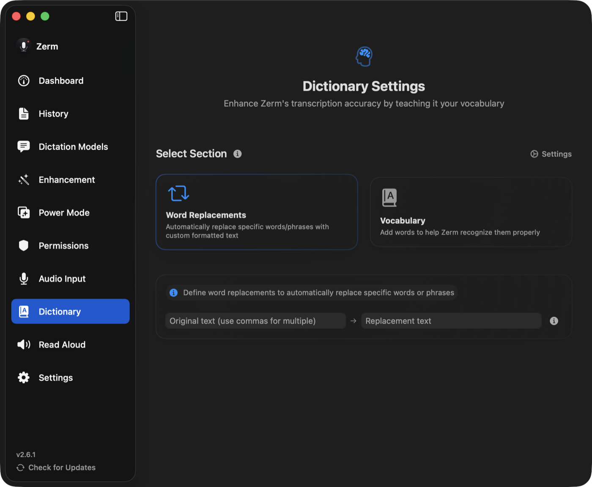

Accuracy
Dictionary
Teach Zerm the names, products and jargon that transcription models reliably get wrong.
Every speech model mishears the same category of word: proper nouns, product names,
internal jargon, and anything spelled unusually. The dictionary is where you fix that
once instead of every time.
It has two halves that work in completely different ways, and picking the right one
matters.

Vocabulary — spelling guidance
A vocabulary entry is a word you tell Zerm to expect. The list is passed to the model as
guidance: when these words, or words that sound like them, appear in your speech, spell
them exactly this way.
Use it for names and terms whose spelling is the problem — colleagues' names, product
names, libraries, medical or legal terms.
Vocabulary is guidance, not a rule. It shifts the odds; it does not guarantee. It is
also only consulted where the pipeline can use it, which means it helps most when
enhancement is running.
Add several at once by separating them with commas. Duplicates are rejected rather than
silently added twice.
Word replacement — an exact rule
A replacement is a find-and-replace applied to the finished transcript, locally, before
the text reaches your cursor. It always fires, on every recording, in every output mode.
Use it when you know exactly what comes out and exactly what you want instead:
| You say | You get |
|---|---|
| "my website link" | https://arcusis.github.io/Zerm/ |
| "Voicing" or "Voice ink" | Zerm |
| "em dash" | — |
How matching works
- Case-insensitive. "zerm", "Zerm", and "ZERM" all match.
- Whole words. Matches respect word boundaries, with punctuation counting as a
boundary, so a replacement for "ink" does not corrupt "thinking". For scripts that do
not space words, Zerm falls back to plain substring matching. - Longest first. When several rules could apply, the longest original is tried
first, so a specific phrase beats a shorter overlapping one. - Several originals, one replacement. Separate the originals with commas — every
variant maps to the same output. This is how you catch the four ways a model spells
one name.
Each rule can be switched off without deleting it.
Which one to use
| Vocabulary | Word replacement | |
|---|---|---|
| What it does | tells the model what to expect | rewrites the finished text |
| Certainty | improves the odds | always applies |
| Needs enhancement | mostly | no |
| Good for | names, jargon, unusual spellings | fixed phrases, expansions, known mistakes |
If the model already produces something recognisable and you just want it spelled
differently, use a replacement. If the model is producing nonsense because it has never
heard the word, use vocabulary.
Quick add
There is a global shortcut for adding to the dictionary without opening the app — for
the moment you notice a mistake, rather than the moment you remember to fix it. See
shortcuts.
Import and export
The dictionary can be exported and imported, so it moves with you between Macs.